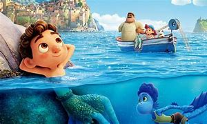
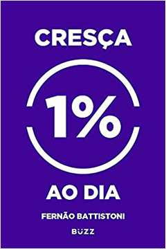
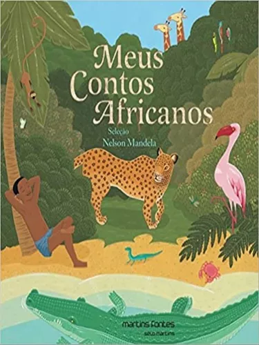

Lugares que eu gostaria de visitar
China
Eu acho a China um país muito bonito porque as comidas são muito interesantes.
Russia
Eu acho a Russia interesante porque é o país com mais população do mundo.
Meus filmes favoritos
Homem aranha sem volta para casa

“Pela primeira vez na história cinematográfica do Homem-Aranha, nosso amigo herói da vizinhança é desmascarado e não é mais capaz de separar sua vida normal das apostas altas de ser um Super-herói. Quando ele pede ajuda ao Doutor Estranho, as apostas tornam-se ainda mais perigosas, forçando-o a descobrir o que realmente significa ser o Homem-Aranha.”
Luca

Luca, o protagonista do longa, segundo o CheatSheet, têm 13 anos. O personagem nunca havia visitado o mundo da terra firme, cultivando um grande medo e curiosidade sobre a vida fora do oceano.
CRESÇA 1% AO DIA

1 % melhor a cada dia Compra verificada O livro traz grandes personalidades de sucesso e suas lições transmitidas ao mundo. O autor aborda cada uma com exemplos e experiências de sua própria vida. Muito bom para quem quer crescer 1 % ao dia. 1 pessoa achou isso útil EXCELENTE para qualquer objetivo de vida Compra verificada
Meus contos africanos

Meus contos africanos é uma antologia que tem quase todos os países do continente representados pela seleção cuidadosa de Nelson Mandela. Por Equipe A Taba 1 de outubro de 2021 ‧ 14 de outubro de 2021 Leitura de 2 minutos